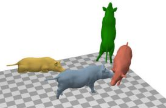
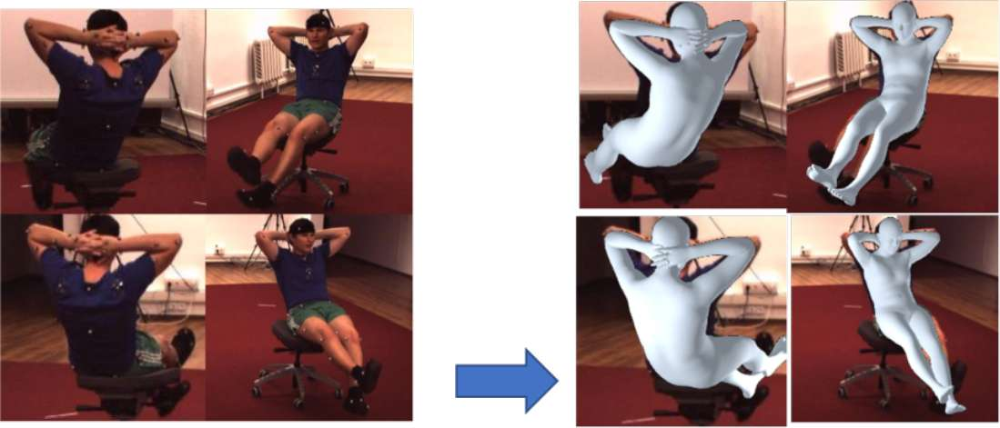
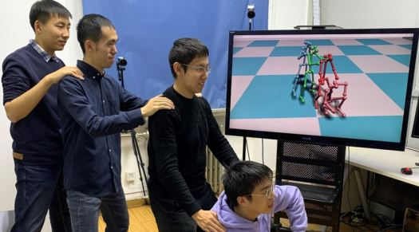

Liang An (安亮)
al17 at mails.tsinghua.edu.cn [Github] [Google Scholar]
About me
I am a final (7th) year Ph.D student at Department of Automation, Tsinghua University, China. I am advised by Yebin Liu in Institute for Brain and Cognitive Sciences. I also work closely with professor Yichang Jia at Deparment of Medicine. I focus on 3D computer vision and its application in biology and medicine. I expect to graduate at 2024. Currently I serve as an independent reviewer for ICCV, CVPR, ECCV, 3DV, AAAI, ICLR, NeurIPS, WACV.2023.11 Our "MAMMAL" system is published online in Nature Communications now!
2023.10 One paper accepted to NeurIPS 2023, which focused on mouse 3D keypoints estimation.
2022.05 Selected as an outstanding reviewer for CVPR 2022.
2022.03 One paper accepted to CVPR 2022 as oral presentation.
2021.08 One paper accepted to ICCV 2021.
Education

Aug. 2017 - Present, Department of Automation, Tsinghua University,
Ph.D Student.
Aug. 2013 - Jul. 2017, Department of Automation, Tsinghua University,
Bachelor of Engineering.
Publications
|  |
Three-dimensional surface motion capture of multiple freely moving pigs using MAMMAL
|
|
Triangulation Residual Loss for Data-efficient 3D Pose Estimation
|
|
|
PyMAF-X: Towards Well-aligned Full-body Model Regression from Monocular Images
|
|
|  |
Delving Deep into Pixel Alignment Feature for Accurate Multi-view Human Mesh Recovery
|

|
Real-time Sparse-view Multi-person Total Motion Capture
|
|
Interacting Attention Graph for Single Image Two-Hand Reconstruction
|
|
|
Lightweight Multi-person Total Motion Capture Using Sparse Multi-view Cameras
|
|
|  |
4D Association Graph for Realtime Multi-person Motion Capture Using Multiple Video Cameras
|

|
DDRNet: Depth Map Denoising and Refinement for Consumer Depth Cameras Using Cascaded CNNs
|
Teaching
- TA, Data Structure(Since Spring 2018)
- TA, C++ Programme Design and Training(Summer 2018)